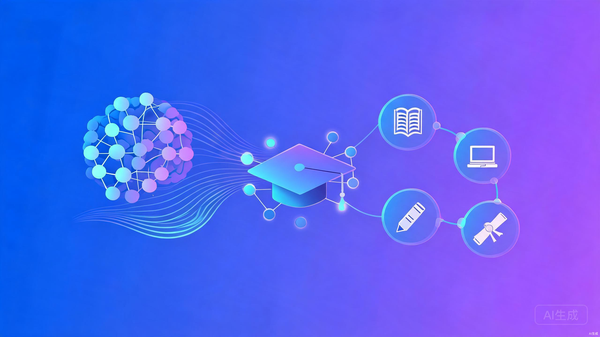
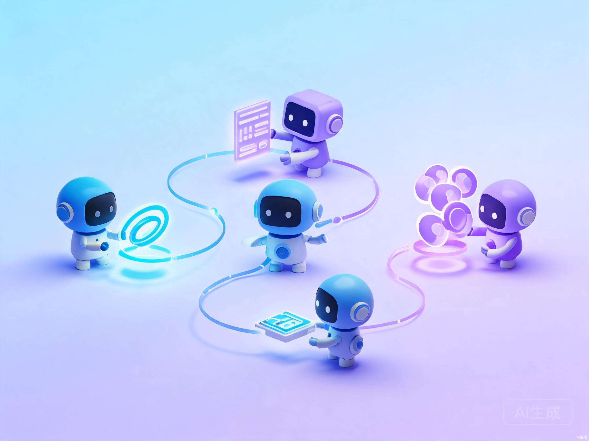

聚焦于课程教学的AI重构，高质量知识体系建设，学科专业培养过程的重塑，汇聚建设成果、由点到面的形成校本应用体系，做创新应用的闭环

AI事业部2026年的产品体系围绕"课程 + 平台 + 整体解决方案"三大方向，从通用AI应用走向学科深耕、课程创新与人才培养闭环。
AI已经不只是工具层面的效率提升，而是在重塑学院的知识生产、课程建设和人才培养方式。事业部围绕三大核心理念展开：
AI事业部的产品矩阵包含以下核心组成部分：

五大核心产品，覆盖从智能体平台到课程建设、知识生产、学院解决方案的完整能力链条。
基于大明白智能体v5版本的Harness引擎，提供多智能体协作框架、工作区、代码安全沙箱、技能管理、MCP接入等一系列能力，与教学平台相结合深度赋能教育教学应用。
回归智能体本身，从"对话"推进到"执行"。基于V5版本建设，面向复杂课程任务提供可调度、可执行、可沉淀的智能体能力。
从学科高质量信源出发，进行分级、分策略的自动化知识点生产和动态更新。注重内容广度和深度，服务于应用落地。
围绕学院人才培养与课程建设需求，形成"知识生产—课程样板—生涯发展—工具赋能"的闭环。
树下平台是一个开放的学习管理系统（LMS），提供数字化的教学运行底座、丰富的场景化应用以及开放的接入方式、以及AI原生的智能体支持。通过树下平台，打造学校整体的数字化环境，围绕课程、专业、学科的建设、运行和评价体系，以及学校特色化的创新成果。
产品在设计理念、技术架构和应用模式上呈现出鲜明的差异化特点。
智能体v5突破了传统AI助手的文字交互局限，面向任务执行与课程产出。从最初的LLM自身能力对话为主，发展到工作流编排、Function Call工具调用，再到Harness引擎的多智能体协作，实现了从"说"到"做"的根本转变。
同一任务下按阶段、角色、技能协同解决复杂任务。不同阶段、不同任务由多个智能体分工辅导，覆盖知识答疑、作业辅导与个性化学业管理。不是提示词包装，而是调度框架与技能层的深度建设。
智能体课程支持讲授式（Lecture-Based Learning）、案例式（Case-Based Learning）、项目式（Project-Based Learning）三种教学模式。从传统课堂到哈佛商学院式的案例教学，再到研究型课程，为不同学科提供匹配的AI赋能方案。
未来知识中心搭建人机协同知识生产工作流，辅助知识萃取、生成与学科地图建设。核心理念为循证医学思路，技术架构采用Multi-Agent Deep Research，检索架构为大小金字塔分层检索模型，并具备生成式引文溯源技术。
知识体系分为三层：L1基础知识（学科/专业高质量信源）、L2教学知识点（用于支持教师备课、课程更新、AI助教）、L3综合知识点（建设直接可用的教学综合性知识）。每一层都有精细化的字段定义和教学建议。
学院AI教学中心针对四类典型客户提供差异化方案：
产品在知识质量、技术深度、教学覆盖和生态建设方面具备显著优势。
以循证医学思路为核心理念，通过多智能体Deep Research技术架构，实现高质量的自动化知识点生产。采用生成式引文溯源技术，确保知识的可追溯性和可靠性。
多阶段多平台迭代测评，覆盖专业知识生产核心维度。由名校博士团队驱动逻辑验证与标准迭代，多平台对标进行跨平台优劣势深度分析与对比，人机质控闭环确保规模化生产稳定性。
从课前预习、课中教学到课后考核，形成完整闭环。AI辅助备课、课堂互动、作业批阅、智能辅导、过程评价等环节全覆盖，实现因材施教和个性化学习。
从调度框架、专家智能体到技能层完整打造，不是浅层的提示词包装。提供调度框架层、专家智能体层、技能层三层深度建设，确保系统可扩展、可维护、可沉淀。
树下平台作为开放LMS，支持Skills和MCP接入，可搭建个性化能力。知识中心支持平台动态更新、持续补充与校准，从模型语料到应用打造可持续演进的学科专有大模型成果。
学院AI教学中心沉淀"知识底座 + 课程样板 + 实验场景 + 培养评价"的完整方法论，帮助同类院校从资源数字化走向教育智能化。建设模式可迁移到不同层次院校，降低重复建设成本。
以下案例均来自PDF分享材料，展示了AI产品在不同院校、不同学科中的落地实践。
北京大学医学未来学习中心致力于培养科研创新人才、临床实践人才和特色产业人才，构建了"构建知识—掌握知识—应用知识—创造知识"四阶段体系。涵盖课程教学体系、实验教学体系和个性化人才发展三大板块。
其中医学数智课程2.0围绕《病理学》《解剖学》等基础医学核心课程，通过AI辅助实现多模态资源的教学应用，支持课前测试学情诊断、课中引入切片内容、师生研讨共建，以及执业医师资格考试测评空间。
八年制基础医学课程还实现了病例PBL教学，从案例出发通过人机交互模拟疾病发生全过程，涵盖AI辅助病例机制讲解、模拟疾病发展全过程、症状体征提取、推演疾病形成机制等环节。
依托课程案例库与AI智能体，将法律规则转化为可进入、可追问、可扮演、可复盘的学习情境。从传统"规则讲授"模式转变为"案例智能体驱动的法律能力培养"模式。
围绕个人信息权利归属、个人信息处理、敏感个人信息、数据分类分级、数据跨境流动、金融信息保护等核心议题，建设了丰富的教学案例库，涵盖人脸识别门禁案、网约车App过度定位案、医疗健康数据用于保险营销等真实案例。
教学价值框架包含：情境化认知（真实案例嵌入课堂）、建构式理解（翻转讨论与角色问答）、实践性迁移（案情-争点-论证-复盘分析链条）、人机协同素养（AI辅助检索与反思）。
从传统项目课痛点出发，用"项目主线 + 智能体辅导 + 过程评价"培养市场营销学生的AI实践素养。围绕一个校园真实需要，完成AI服务MVP，并把全过程沉淀为个人know-how。
课程流程分为六大阶段：创意生成 → 原型建造 → 组织行动 → 现实检验 → 期末演示 → 项目复盘。智能体在各个环节承担基础陪跑，教师集中处理关键节点与高阶判断。
教学价值体现在：AI素养实践化（不只学工具，而是在项目中完成需求探索与价值判断）、营销能力再训练（将用户洞察与市场验证放入AI场景）、教师辅导精准化（智能体承担基础陪跑，教师聚焦高阶判断）。
围绕专业群，贯通知识标准、课程实践与人才发展。以岗位任务为牵引，把专业群知识、创新课程和产业项目组织为一套人才培养体系。
基于"协作空间"的项目协作平台，接入产业的真实项目，面向典型岗位和人才画像的生涯培养路径。推动项目式、案例式的AI课程建设，围绕专业群的知识中心建设专业知识、核心技能，并关联到岗位和典型工作任务。
| 客户类型 | 典型客户 | 核心需求 | 匹配方案 |
|---|---|---|---|
| 关注课程建设 | 内江师范学院数学学院 北京航空航天大学宇航学院 |
缺成果、缺思路，急需课程创新抓手 | 核心课程样板 → 平台服务师生 → 学院门户 |
| 人才培养导向 | 上海中医药大学中医学院 | 按标准培养人才，需要自主学习支持 | 平台公共模块 → 生涯路径规划 → 学生画像 |
| 学科大模型 | 中南大学湘雅医学院 上海中医药大学中药学院 |
出亮点、出成绩，闭环的学科大模型故事 | 知识中心 → 超级智能体 → 学科工具/专家团 |
| 引领学科 | 北京大学医学部 深圳职业技术大学汽车与交通学院 |
做AI+学科教学范式的标准和标杆 | 高度定制化方案 |
| 职业院校 | 双高院校及升本需求院校 | 专业群AI全流程创新及实践驱动 | 专业群知识中心 → 实践课程 → 实践教学平台 |
AI事业部2026年产品体系的核心价值与未来方向。
AI事业部以"课程 + 平台 + 整体解决方案"为核心，构建了从智能体基础设施到学科应用的完整产品矩阵。核心价值体现在：
事业部组织调整从营销大区到业务中心，让资源往一线去，为产品落地提供了组织保障。未来将持续推动AI+教育的深度融合，助力更多院校实现教育智能化转型。